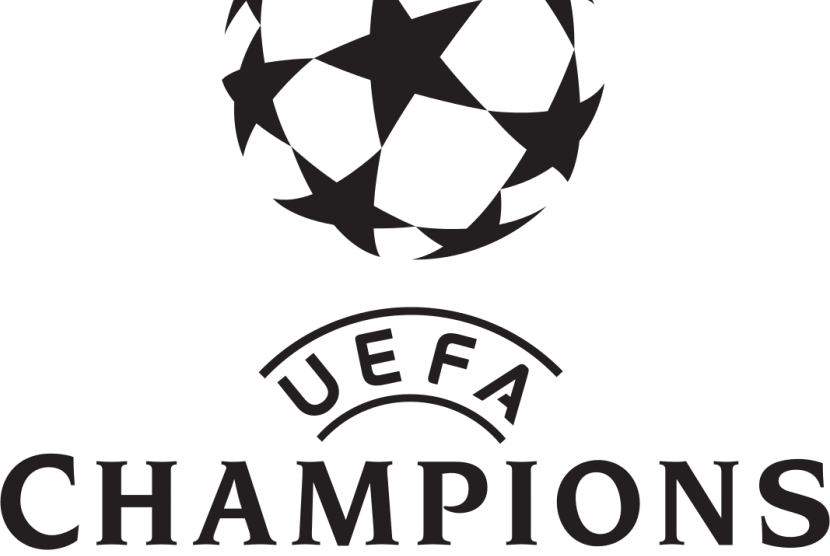

Fútbol Club Oporto
El Fútbol Club de Oporto, conocido comúnmente como Porto, es un club de fútbol de la ciudad de Oporto, Portugal. Fue fundado el 28 de septiembre de 1893 y juega en la Primera División de Portugal.
Volver
Seguir leyendo...